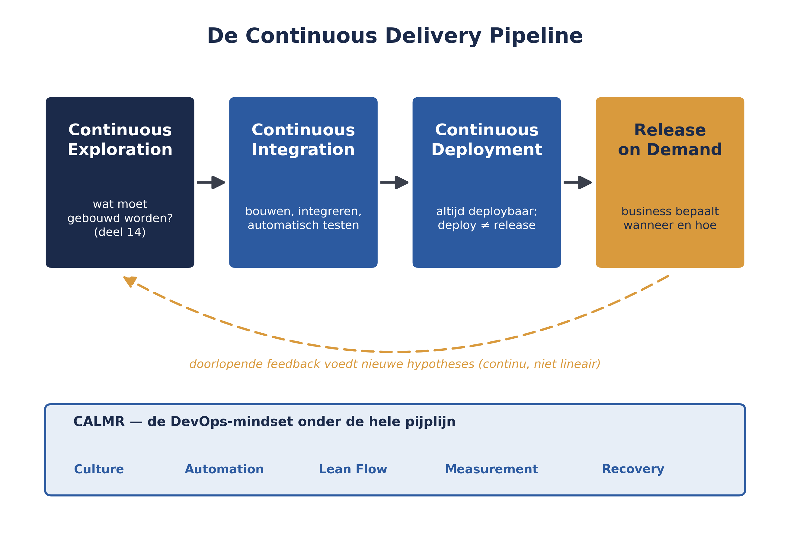
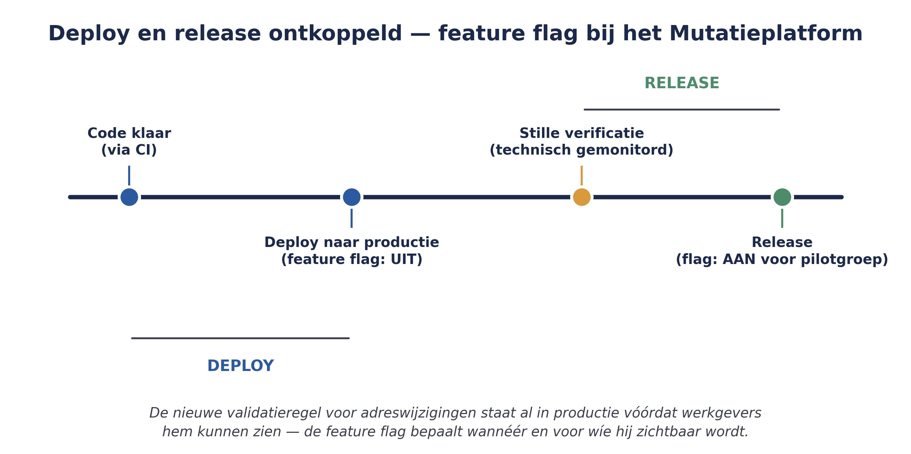

Continuous Delivery Pipeline, DevOps en Release on Demand
Deel 14 behandelde Continuous Exploration, de eerste fase van de Continuous Delivery Pipeline (CDP). Dit deel behandelt de overige drie fasen — Continuous Integration, Continuous Deployment en Release on Demand — en de DevOps-mindset die de hele pijplijn ondersteunt: CALMR. Samen vormen deze vier fasen het antwoord op de vraag: hoe komt een idee, ooit begonnen als hypothese, betrouwbaar en snel bij de klant terecht?
5secties
±1,5udagdeel + huiswerk
11controlevragen
4CDP-fasen
Positionering. Deze cursus is een voorbereiding op de certificeringen SAFe Agilist (SA) en SAFe Practitioner (SP) van Scaled Agile, en uitdrukkelijk geen vervanging van het officiële SAFe-curriculum — dat wordt uitsluitend aangeboden via geautoriseerde Scaled Agile Partners. Voor terminologie en structuur volgen wij SAFe 6.0, de actuele versie van het Core-raamwerk.
Niveau 2: 11 Van ART naar Solution Train → 12 RTE-zwaartepunt I → 13 RTE-zwaartepunt II → 14 Agile Product Management → 15 Continuous Delivery Pipeline (hier) → 16 Architectural runway → 17 LPM I: strategie & budgets → 18 LPM II: portfolio kanban → 19 Meten: flow metrics & OKR's → 20 Governance & compliance → 21 AI-Native II → 22 Examentraining + capstone
01
Continuous Integration
⏱ 16 min
Deel 14 behandelde Continuous Exploration (CE), de eerste fase van de Continuous Delivery Pipeline (CDP). Dit deel behandelt de overige drie fasen — Continuous Integration, Continuous Deployment en Release on Demand — en de DevOps-mindset die de hele pijplijn ondersteunt: CALMR. Samen vormen deze vier fasen het antwoord op de vraag: hoe komt een idee, ooit begonnen als hypothese, betrouwbaar en snel bij de klant terecht?

Figuur 15-1 — de volledige Continuous Delivery Pipeline: CE, CI, CD, RoD, met CALMR als onderliggende laag
Continuous Integration (CI) draait om kwaliteit inbouwen tijdens het bouwen: code van verschillende teams wordt vaak samengevoegd (geïntegreerd), automatisch getest, en doorlopend van feedback voorzien. De activiteiten binnen CI omvatten het bouwen van deploybare software (compileren, samenvoegen van ontwikkelbranches), end-to-end testen van het geïntegreerde geheel, en het gereedmaken voor de volgende fase. Het doel is dat een team nooit wekenlang in isolatie bouwt om er dan pas achter te komen dat de onderdelen niet samenwerken — een risico dat direct verband houdt met principe 4 uit deel 2 (snelle, geïntegreerde leercycli).
Controlevraag
Uit Werkboek deel 15, Opdracht 15.1 — de vier fasen op een rij
1Vul voor elke fase van de CDP (CE, CI, CD, RoD) in: wie is er primair verantwoordelijk, en wat is de kernvraag die die fase beantwoordt?Toon antwoord
CE — Product Management/System Architect/Engineering, kernvraag: wat moet gebouwd worden? CI — de teams, kernvraag: is het geïntegreerd en getest? CD — de teams/DevOps-praktijk, kernvraag: is het systeem klaar om te releasen? RoD — Business Owners/Product Management, kernvraag: wanneer en hoe releasen we dit aan gebruikers?
02
Continuous Deployment: deploy versus release
⏱ 17 min
Continuous Deployment (CD) zorgt dat het systeem altijd in een deploybare staat verkeert — gereed om naar productie te gaan zodra de business daarom vraagt. Dit is een cruciaal, vaak onderschat onderscheid: deployen (de code naar een productieomgeving brengen) is niet hetzelfde als releasen (de functionaliteit zichtbaar en bruikbaar maken voor eindgebruikers). Door deze twee te ontkoppelen (decouple deploy from release) kan nieuwe code al in productie draaien, technisch geverifieerd en gemonitord, zonder dat eindgebruikers er al iets van merken — bijvoorbeeld met feature flags, een technische schakelaar waarmee functionaliteit per klantgroep of tijdstip aan of uit gezet kan worden.
Dit onderscheid is voor Meridiaan bijzonder relevant. In een gereguleerde context — met toezicht van DNB en AFM, een thema dat in niveau 3 van deze cursus centraal staat — is het waardevol om nieuwe functionaliteit eerst stil in productie te verifiëren voordat die daadwerkelijk voor werkgevers zichtbaar wordt. Dat vermindert het risico op een verkeerd werkende functie die rechtstreeks impact heeft op een pensioenberekening.

Figuur 15-2 — deploy versus release ontkoppeld, met een feature flag-voorbeeld voor het Mutatieplatform
Controlevragen
Uit Werkboek deel 15, Opdracht 15.2 en Zelftoets, vraag 2
1Leg het verschil uit tussen deployen en releasen. Bedenk zelf een voorbeeld (niet uit de reader) waarin dit onderscheid waarde toevoegt.Toon antwoord
Deployen is de code technisch naar productie brengen; releasen is de functionaliteit zichtbaar/bruikbaar maken voor eindgebruikers. Vrij voorbeeld, mits het onderscheid functioneel wordt toegepast — bijvoorbeeld: een nieuwe betaalmethode die al in productie draait, maar pas op een aangekondigde datum voor klanten wordt geactiveerd.
2Wat is het verschil tussen Continuous Integration en Continuous Deployment?Toon antwoord
CI gaat over bouwen, integreren en testen; CD gaat over het systeem altijd deploybaar houden, los van de vraag of het al aan gebruikers is vrijgegeven.
03
Release on Demand
⏱ 14 min
Release on Demand (RoD) is de laatste fase: de business — doorgaans Business Owners of Product Management — beslist wanneer en hoe functionaliteit daadwerkelijk wordt vrijgegeven aan gebruikers, afgestemd op klantvraag en zakelijke overwegingen. Dit hoeft niet gelijk te lopen met wanneer de code technisch klaar is (dat is immers al bij Continuous Deployment geregeld) — een release kan bewust worden getimed, bijvoorbeeld rond een wettelijke ingangsdatum van de Wtp-transitie, of geleidelijk worden uitgerold naar een beperkte groep werkgevers voordat de volledige doelgroep toegang krijgt.
Technisch klaar ≠ business beslist
"Technisch klaar" en "de business beslist te releasen" zijn bewust twee losse momenten — niet omdat de techniek traag is, maar omdat het een zakelijke afweging is wanneer waarde het beste wordt vrijgegeven.
Controlevragen
Uit Werkboek deel 15, Opdracht 15.4 — Release on Demand toepassen
1Meridiaan heeft een nieuwe validatieregel voor adreswijzigingen technisch gereed (via CI en CD), maar de Wtp-transitie is nog niet formeel ingegaan. Wat zou een goede reden zijn om deze feature nog niet meteen te releasen aan alle werkgevers?Toon antwoord
De feature technisch al in productie hebben maar pas releasen zodra de Wtp-transitie formeel ingaat, voorkomt verwarring bij werkgevers over regels die nog niet officieel gelden.
2Beschrijf een gefaseerde release-aanpak (bijvoorbeeld eerst een pilotgroep) en wat je daarmee zou willen leren voordat je breder uitrolt.Toon antwoord
Een pilotgroep van bijvoorbeeld tien tot twintig werkgevers krijgt eerst toegang; Meridiaan leert of de validatieregel in de praktijk klopt en gebruiksvriendelijk is, voordat de volledige doelgroep toegang krijgt.
04
CALMR: de DevOps-mindset
⏱ 17 min
DevOps is in SAFe geen aparte afdeling of tool, maar een mindset en cultuur die de hele Continuous Delivery Pipeline ondersteunt. SAFe vat dit samen in CALMR:
Culture — gedeelde verantwoordelijkheid voor release, operatie en feedback, over de hele waardestroom heen — niet "ontwikkeling bouwt, operations lost problemen op".
Automation — zoveel mogelijk menselijke tussenkomst uit de pijplijn halen om fouten te verminderen en doorlooptijd te verkorten.
Lean Flow — de toepassing van principe 6 uit deel 2: onderhanden werk beperken, batchgroottes verkleinen, wachtrijen beheren.
Measurement — leren en verbeteren door de stroom van waarde door de pijplijn te begrijpen en te kwantificeren.
Recovery — het vermogen om een oplossing na een storing of incident snel terug te brengen naar een gewenste staat.
Deze vijf elementen versterken elkaar: automatisering zonder de juiste cultuur levert weerstand op; metingen zonder recovery-vermogen levert alleen zichtbare problemen op zonder het vermogen ze op te lossen.
Controlevragen
Uit Werkboek deel 15, Opdracht 15.3 — CALMR toepassen
1Een storing in de BRP-koppeling wordt pas na drie dagen hersteld omdat niemand een duidelijk herstelplan heeft. Welk CALMR-element wordt hier geschonden, en wat zou een verbetering zijn?Toon antwoord
Recovery — een duidelijk, geoefend herstelplan zou de hersteltijd verkorten.
2Testen gebeurt nog grotendeels handmatig, waardoor elke release een volle werkdag aan controle kost. Welk CALMR-element wordt hier geschonden, en wat zou een verbetering zijn?Toon antwoord
Automation — geautomatiseerd testen zou tijd besparen en fouten verminderen.
3Het ontwikkelteam voelt zich niet verantwoordelijk voor wat er na de release gebeurt — "dat is voor operations". Welk CALMR-element wordt hier geschonden, en wat zou een verbetering zijn?Toon antwoord
Culture — gedeelde verantwoordelijkheid over de hele waardestroom zou dit gedrag veranderen.
4Niemand houdt bij hoe lang het gemiddeld duurt voordat een feature van idee tot productie komt. Welk CALMR-element wordt hier geschonden, en wat zou een verbetering zijn?Toon antwoord
Measurement — het meten van doorlooptijd (lead time) zou knelpunten in de pijplijn zichtbaar maken.
05
Terug naar Meridiaan: de CDP voor het Mutatieplatform
⏱ 13 min
Voor de Solution Train Mutatieplatform betekent dit concreet: elke ART bouwt en onderhoudt (of deelt met andere ARTs) een eigen pijplijn met de tools en technologie om zo zelfstandig mogelijk waarde te leveren. Een nieuwe validatieregel voor een adreswijziging doorloopt CI (geautomatiseerd getest tegen bestaande en nieuwe testgevallen), wordt via CD naar productie gebracht maar aanvankelijk achter een feature flag verborgen, en wordt pas via RoD daadwerkelijk zichtbaar voor werkgevers — mogelijk eerst voor een beperkte pilotgroep, in lijn met de zorgvuldigheid die in een gereguleerde sector past.
Kernbegrippen uit dit deel
Continuous Integration (CI) — bouwen, integreren en automatisch testen, met snelle feedback.
Continuous Deployment (CD) — het systeem altijd deploybaar houden; deploy en release ontkoppeld.
Release on Demand (RoD) — de business bepaalt wanneer en hoe functionaliteit daadwerkelijk zichtbaar wordt.
Feature flag — een technische schakelaar om functionaliteit los van de deployment te activeren.
CALMR — de DevOps-mindset: Culture, Automation, Lean Flow, Measurement, Recovery.
2Waarom is het ontkoppelen van deploy en release extra relevant voor een organisatie zoals Meridiaan?Toon antwoord
Omdat Meridiaan in een gereguleerde sector opereert (DNB/AFM-toezicht), waar het risicovol is om functionaliteit die pensioenberekeningen raakt, direct volledig zichtbaar te maken zonder eerst stil te kunnen verifiëren.
Verder naar deel 16
Deel 16 verdiept de rol van de architect binnen SAFe: de architectural runway, de vier typen enablers en de balans tussen intentional architecture en emergent design.